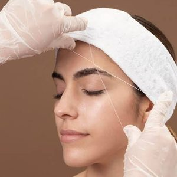
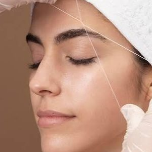
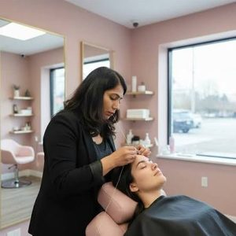

10 minEyebrow Threading
Clean, defined brows shaped to suit you.
₹49
For facial hair, most women in India choose threading, and for good reason. Here is how threading and waxing compare on precision, pain, results and sensitive skin, so you can choose what works for your face.
Starting at ₹29

Book at Home

10 minClean, defined brows shaped to suit you.
₹49
Quick, neat upper lip hair removal.
₹29

20 minComplete face threading, smooth finish.
₹149
| Threading | Waxing | |
|---|---|---|
| How it works | A twisted cotton thread lifts out rows of hair | Wax grips the hair and a strip pulls it out |
| Precision | Very precise. Shapes brows line by line | Removes a whole patch at once |
| Best for | Eyebrows, upper lip, chin, forehead, sides of face | Larger areas: arms, legs, underarms, body |
| Effect on skin | Touches only the hair line being removed | Also lifts a thin layer of dead skin |
| Products on skin | None. Just thread | Wax on the skin |
| Typical results | Brows 2–3 weeks; upper lip and face often 2–4 weeks | Usually 3–4 weeks on arms and legs |
Short answer: for eyebrows, threading is the clear choice because of its precision. For the upper lip and face, threading is the most common choice too. It's quick, precise and puts nothing on the skin. Waxing is best kept for larger body areas.
At Ready2Glow we offer threading for the face (eyebrows, upper lip and full face) and waxing for the body (arms, legs, underarms and full body).
Eyebrow shape depends on millimetres. Threading removes hair in fine lines, so the beautician can shape your arch, tail and thickness exactly. Wax covers an area at once, which makes it harder to control around the brow line.
That's why eyebrow threading is the standard choice in Indian salons. At Ready2Glow it takes about 10 minutes and costs ₹49. Brows usually need it again every 2–3 weeks.
Both work. Here's how they compare:
Upper lip threading at Ready2Glow takes about 5 minutes and costs ₹29.
For the forehead, chin and sides of the face, the same points apply. Full face threading at Ready2Glow covers the forehead, upper lip, chin and sides of the face in about 20 minutes, for ₹149.
If you're using strong skincare such as retinol or prescription creams, or you've had a recent chemical peel, tell your beautician before any hair removal on the face, and check with your dermatologist.
There's a short sting, especially the first time and on the upper lip. It reduces with regular sessions. To make it easier:
No. Threading pulls hair from the root. It doesn't change the thickness or colour of the hair that grows back. Regrowth can feel coarser at first because short new hairs have blunt tips.
Timing before an event: thread 1–2 days before, not on the day, so any redness settles. Book a facial 2–3 days before and threading after it.
Threading is quick, so it's easy to add to any other home appointment, like a cleanup, facial or waxing. A fresh cotton thread is used for every customer. See eyebrow and face threading at home, or our waxing at home service for arms, legs and body.
Ready2Glow is a home salon for women in Indore. Message us on WhatsApp and our team will confirm your beautician and time.
Book on WhatsApp Call +91 88203 69048
Open 8:00 AM – 8:00 PM, all seven days · Instagram @ready2gloww
Both remove hair from the root and last a similar time. Threading is the more common choice for the upper lip because it's quick, precise and puts nothing on the skin, which suits sensitive facial skin.
Results are similar, because both remove hair from the root. Upper lip and face usually last 2–4 weeks, depending on your hair growth.
Yes, for most women. Threading shapes brows line by line, so the arch and tail can be controlled precisely.
Our current list has threading for the face (eyebrows, upper lip and full face) and waxing for arms, legs, underarms and full body.
Every 2–3 weeks keeps them in shape.